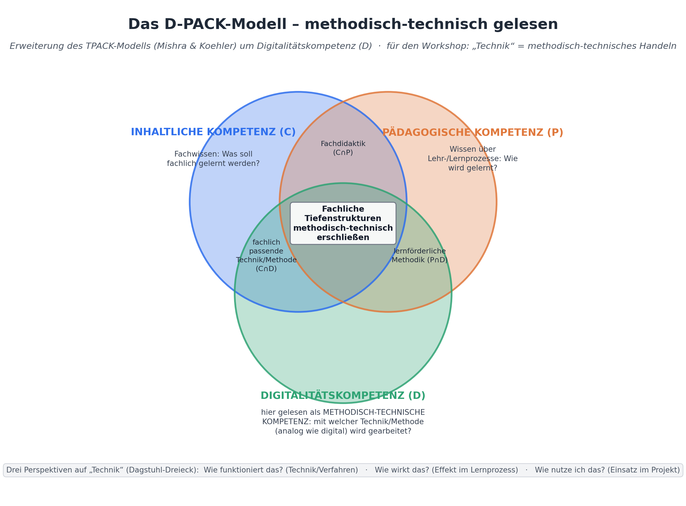
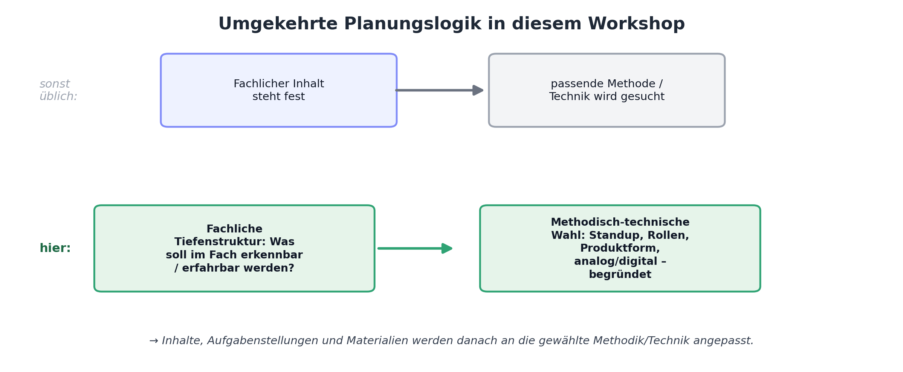

Arbeitshilfe · vertiefendes Nachschlagematerial
Methodisch-technische Unterrichtsplanung – mit umgekehrter Planungslogik, Fachbeispielen und KI-Bezug
Das D-PACK-Modell erweitert das bekannte TPACK-Modell (Mishra & Koehler): Statt technisches Wissen (T) isoliert zu betrachten, integriert D-PACK eine umfassendere Digitalitätskompetenz (D), die neben dem „Wie funktioniert das?“ auch danach fragt, wie eine Technik oder Methode im Lernprozess wirkt und wie sie sinnvoll eingesetzt wird (Dagstuhl-Dreieck).
Für diesen Workshop wird der Begriff „Technik“ bewusst weiter gefasst: nicht nur als digitales Werkzeug, sondern als methodisch-technisches Handeln insgesamt – analog wie digital. Ein Standup ist in diesem Sinn ebenso „Technik“ wie ein digitales Whiteboard: beide sind Verfahren, mit denen fachliche Tiefenstrukturen für Schülerinnen und Schüler erfahrbar gemacht werden.
KI-Werkzeuge sind eine weitere, besonders wirkmächtige Ausprägung von „Technik“ in diesem Sinn: Sie verändern das methodische Vorgehen oft noch deutlicher als klassische digitale Werkzeuge, weil sie fertige Inhalte liefern können, ohne die fachliche Tiefenstruktur automatisch mitzuliefern. Die Fachbeispiele weiter unten zeigen das konkret.

Die drei Bereiche im Überblick: Inhaltliche Kompetenz (C) – was fachlich gelernt werden soll; Pädagogische Kompetenz (P) – wie Lernprozesse gestaltet werden; Digitalitätskompetenz (D) – hier gelesen als methodisch-technische Kompetenz: mit welchem Verfahren (Standup, Rollenwechsel, Produktform, digitales Tool …) wird gearbeitet. Entscheidend ist die Schnittmenge aller drei Bereiche in der Mitte: Dort wird eine Methode/Technik so gewählt, dass sie die fachlichen Tiefenstrukturen eines Themas tatsächlich erschließt – nicht nur organisatorisch praktisch ist.
Normalerweise steht der fachliche Inhalt fest, und die passende Methode wird im Anschluss gesucht. In diesem Workshop soll die Planungsrichtung bewusst umgekehrt werden: Ausgangspunkt ist die Frage, welche fachliche Tiefenstruktur Schülerinnen und Schüler durch das Projekt erkennen und einüben sollen. Erst danach wird entschieden, mit welcher Methode/Technik – analog oder digital – diese Struktur am besten erfahrbar wird. Die fachlichen Inhalte und Materialien werden anschließend an diese methodisch-technische Entscheidung angepasst.

Für Schülerinnen und Schüler wird dadurch transparent, dass Methoden – ob analog oder digital – nicht beliebig austauschbar sind, sondern gezielt eingesetzt werden, um die Lern- und Tiefenstrukturen eines Faches sichtbar und bearbeitbar zu machen. Fachliches Vorgehen und Methode stehen damit immer in Abhängigkeit von der jeweils eingesetzten Technik.
Der Wechsel von „Welchen Stoff behandeln wir?“ zu „Welche fachliche Tiefenstruktur soll erkennbar werden?“ ist keine Kleinigkeit, sondern verlangt, eine tief eingeübte Gewohnheit zu durchbrechen. Kernlehrpläne sind inhaltlich formuliert („Die Schülerinnen und Schüler kennen …“), Studium und Referendariat trainieren vor allem fachlich-inhaltliche Stoffvermittlung, und auch Prüfungsformate fragen meist Inhalte ab. Von dort aus zu planen ist der eingeübte Normalfall – nicht, weil er falsch wäre, sondern weil er selten hinterfragt wird.
Der D-PACK-Blick verlangt deshalb einen bewussten Zwischenschritt: Bevor über Stoff gesprochen wird, wird zunächst benannt, welches fachliche Vorgehen – welche Denk- oder Arbeitsweise des Faches – die Schülerinnen und Schüler an diesem Gegenstand einüben sollen. Das ist ungewohnt und fühlt sich im ersten Moment oft abstrakter an als eine Inhaltsliste. Es lohnt sich trotzdem, weil eine einmal erkannte Tiefenstruktur auf viele verschiedene Inhalte übertragbar ist – die Methode/Technik, die sie erschließt, bleibt bei einem neuen Thema oft dieselbe.
Das folgende Beispiel aus der Erdkunde zeigt denselben Unterrichtsgegenstand einmal inhaltlich zuerst und einmal von der Tiefenstruktur her geplant.
| Inhaltlich zuerst geplant (üblich) | Tiefenstruktur zuerst geplant (D-PACK) | |
|---|---|---|
| Ausgangsfrage | Welchen Stoff behandeln wir? | Welche fachliche Tiefenstruktur soll erkennbar werden? |
| Erste Entscheidung | Thema „Regenwald“: Klima, Vegetation, Nutzung, Rodung | Vergleichendes, kategoriengeleitetes Raumdenken |
| Methode/Technik | ergibt sich eher zufällig: Lehrervortrag + Gruppenreferat | bewusst gewählt: Vergleichsmatrix zu zwei Räumen anhand derselben Kategorien |
| Rolle des Inhalts | steht von Anfang an fest, Methode wird passend gesucht | wird zuletzt an die Methode angepasst – austauschbar, z. B. anderes Raumpaar |
| Transfereffekt | Schüler:innen kennen Fakten zum Regenwald | Schüler:innen können die Vergleichsmethode auf jeden neuen Raum anwenden |
Der Unterschied liegt nicht im Fleiß oder in der Qualität der Vorbereitung, sondern im Ausgangspunkt: In der rechten Spalte ist die Methode (die Vergleichsmatrix mit festen Kategorien) das eigentliche Lernziel – der Inhalt (Regenwald, Wüste oder ein anderes Raumpaar) ist austauschbares Material, an dem diese Methode geübt wird.
Wie eine bewusst gewählte Methode/Technik das Erlernen einer fachlichen Tiefenstruktur oder Fachmethode unterstützt – nicht nur organisatorisch entlastet. Und wie sich das Bild mit KI-Einsatz noch einmal verschiebt.
Quellenkritik und Multiperspektivität – Quelle und Darstellung unterscheiden, Interessen hinter Aussagen erkennen.
Projekt zu einem historischen Ereignis, z. B. dem Mauerfall oder der Industrialisierung.
Perspektiven-Stationenlernen: Gruppen ordnen unterschiedliche Quellentypen (Zeitzeugenbericht, Zeitungsartikel, offizielles Dokument) einer gemeinsamen Perspektiven-Wand zu (analog: Pinnwand; digital: Padlet/Miro-Board) und markieren, wessen Interessen jeweils sichtbar werden.
Das Zuordnen selbst zwingt dazu, Quellenart und Perspektive zu unterscheiden – nicht das Lesen von Inhalt allein. Ein Lückentext zu Ereignisdaten würde dieselbe Tiefenstruktur nicht trainieren.
Die Gruppen lassen zusätzlich von einer KI eine Zeitzeugen-Darstellung zum Ereignis erzeugen und ordnen auch diese versuchsweise der Perspektiven-Wand zu – mit der Zusatzaufgabe, an welchen sprachlichen und inhaltlichen Merkmalen sie als KI-generiert und historisch nicht verankert zu erkennen ist. Weil ein KI-Text auf den ersten Blick genauso glaubwürdig wirkt wie eine echte Quelle, aber keinerlei Quellenwert besitzt, wird Quellenkritik hier nicht nur geübt, sondern unmittelbar notwendig.
Vermuten – Prüfen – Verallgemeinern (mathematisches Argumentieren), Muster in Zahlen oder Figuren erkennen.
Untersuchung eines Zahlenmusters oder geometrischen Zusammenhangs.
Systematische Parametervariation in einer Tabellenkalkulation oder GeoGebra: eine Größe gezielt verändern, die Auswirkung beobachten, eine Vermutung formulieren und an weiteren Fällen prüfen, bevor sie schriftlich begründet wird.
Das Werkzeug macht das systematische Variieren und Prüfen einer Vermutung selbst zum Handlungsschritt – genau das mathematische Vorgehen, das gelernt werden soll, nicht nur das Berechnen eines Ergebnisses.
Die Gruppen lassen sich von einer KI eine Erklärung für das gefundene Muster vorschlagen – und prüfen diese anschließend selbst an weiteren Beispielen nach, statt sie zu übernehmen. Weil KI-Erklärungen mathematisch plausibel klingen können, ohne korrekt zu sein, wird das Prüfen der Vermutung (nicht das Finden) zum eigentlichen Lernschritt – das mathematische Vorgehen wird so noch bewusster von der bloßen Ergebnisbeschaffung getrennt.
Naturwissenschaftliche Erkenntnismethode – Hypothese, kontrollierter Versuch, Auswertung, Rückbezug auf die Hypothese.
Untersuchung von Wachstums- oder Keimungsbedingungen.
Kontrollgruppen-Experiment mit Protokollvorlage, die gezielt nach unabhängiger/abhängiger Variable und Kontrollbedingung fragt (analog), alternativ Langzeitmessung mit einem digitalen Sensor-Datenlogger.
Die Protokollstruktur selbst erzwingt das Denken in Variablen und Kontrolle – den Kern der naturwissenschaftlichen Methode – unabhängig davon, welches konkrete biologische Thema untersucht wird.
Eine KI wird gebeten, aus den erhobenen Messdaten eine mögliche Erklärung abzuleiten; die Gruppe muss diese Erklärung anschließend mit einem eigenen kontrollierten Gegenversuch oder anhand der eigenen Kontrollgruppendaten überprüfen, statt sie als Ergebnis zu übernehmen. Die KI ersetzt so nicht das Experiment, sondern liefert nur eine zu prüfende Vermutung – der Unterschied zwischen Korrelation und Kausalität wird dadurch unmittelbar erfahrbar.
Textinterpretation als textbelegte, begründete Deutung – Meinung von belegter Aussage unterscheiden, Mehrdeutigkeit aushalten.
Interpretation eines Gedichts oder einer Kurzgeschichte.
Placemat-Methode: Jede:r notiert zunächst einzeln eine Deutung mit Textstelle, erst danach Vergleich und Diskussion in der Gruppe und Einigung auf die tragfähigsten, textbelegten Deutungen.
Die Struktur der Methode – erst einzeln, dann Textbeleg-Pflicht, dann Aushandlung – trainiert genau die Unterscheidung zwischen unbegründeter Meinung und textbelegter Interpretation.
Eine KI erzeugt eine zweite Interpretation desselben Textes; die Gruppe vergleicht diese mit der eigenen und prüft für beide Deutungen, ob sie tatsächlich mit Textstellen belegt sind oder nur plausibel klingen. KI-Interpretationen sind oft eloquent formuliert, aber nicht immer textnah – der Vergleich schärft genau die Unterscheidung zwischen Meinung und belegter Deutung, um die es in der Methode geht.
Kontroversität und Interessenanalyse (Beutelsbacher Konsens) – erkennen, wessen Interessen hinter einer Position stehen.
Planspiel zu einer aktuellen politischen Entscheidung, z. B. einem Tempolimit oder späteren Schulstartzeiten.
Rollenbasiertes Planspiel bzw. Fishbowl-Debatte mit zugewiesenen Interessenpositionen, die die Schüler:innen nicht selbst wählen dürfen.
Die erzwungene Rollenübernahme macht die Interessengebundenheit einer Position praktisch erfahrbar, statt sie nur inhaltlich zu behaupten.
Die Gruppen fragen eine KI zusätzlich nach einer „neutralen“ Einschätzung zur Streitfrage und analysieren anschließend, welche Interessen oder Perspektiven trotzdem in dieser vermeintlich neutralen Antwort stecken. Das macht sichtbar, dass auch KI-Antworten nie interessenfrei sind – die Methode (Interessenanalyse) wird dabei direkt auf ein neues Objekt angewendet: die KI-Antwort selbst.
Ein KI-Tool kann in Sekunden einen Inhalt liefern – eine Antwort, eine Interpretation, eine Erklärung, eine vermeintliche Quelle –, aber es kann die fachliche Tiefenstruktur nicht ersetzen, mit der dieser Inhalt geprüft, eingeordnet oder infrage gestellt wird. Wird ein KI-Ergebnis unreflektiert übernommen, entfällt genau der Lernschritt, um den es im Projekt eigentlich geht. Deshalb braucht jeder KI-Einsatz im Unterricht eine explizite Prüf- oder Reflexionsaufgabe, die die Tiefenstruktur des Fachs aktiviert – nicht als zusätzliche Bremse, sondern als eigentlicher Kern der Aufgabe.
In allen fünf KI-Varianten oben liegt der Schwerpunkt deshalb auf der Reflektieren-Dimension der KI-Kompetenz – neben Verstehen, Anwenden und Mitgestalten, denselben vier Domänen wie im Workshop „KI als Lernhelfer statt Lösungsmaschine“: KI-Ausgaben werden nicht als fertiges Ergebnis akzeptiert, sondern als zu prüfende Aussage behandelt, die erst durch die fachliche Methode – Quellenkritik, mathematisches Prüfen, kontrollierten Versuch, Textbeleg, Interessenanalyse – eingeordnet werden darf.
Für die Standup-Struktur bedeutet das: Ein KI-generierter Zwischenstand ist im Standup kein Ergebnis, sondern ein Hindernis oder ein nächster Arbeitsschritt, über den berichtet wird – „Wir haben eine KI-Antwort bekommen und prüfen sie jetzt“ ist eine typische, gute Standup-Aussage.
Quelle: Auszug aus dem Workshop-Konzept „Projektorientiertes Lernen mit eduScrum“ (Baustein 2 / Abschnitt 4). Das D-PACK-Modell erweitert TPACK (Mishra & Koehler) um eine methodisch-technisch gelesene Digitalitätskompetenz, orientiert am Dagstuhl-Dreieck.